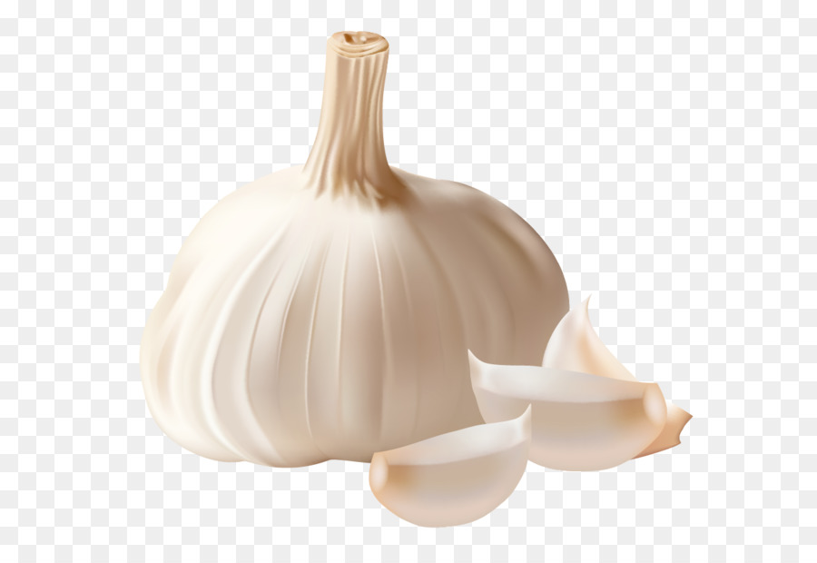
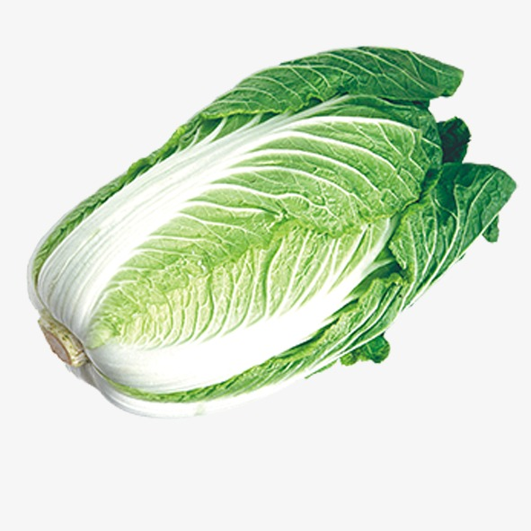
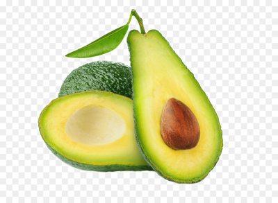

Haja Production School started urban farming after they learned that life in the city is dependent on dangerous energy sources like nuclear energy. The young people of the school learn and cultivate different kinds of seasonal crops in their urban farming class called Hyeonminae-hop. They grow sweet potatoes, potatoes, garlic, onion, green leaf vegetables, tomatoes, cabbages as well as cotton.
What is a plant that is not grown in the garden of Kurikindi Center?
  